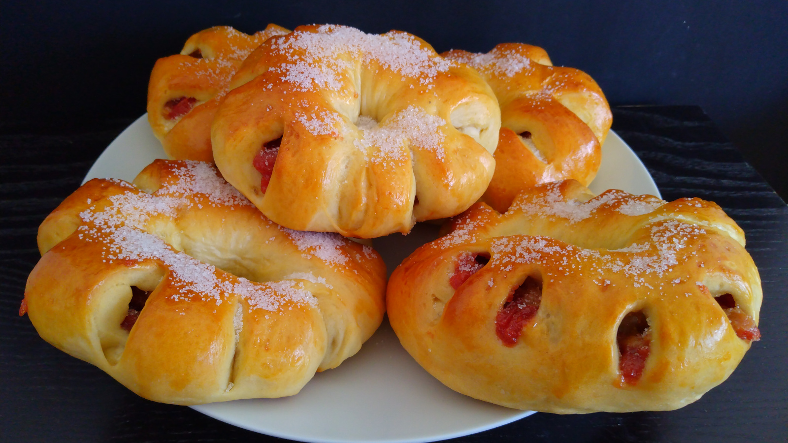

Roscones de Bocadillo Colombianos
- Preparación: 30 min
- Tiempo total de levado: 1 - 2 hr
- Horneado: 20 - 25 min
- Porciones: 8 roscones
INGREDIENTES
PARA LA MASA
- 1 taza (240 g) de leche tibia
- 2½ cucharaditas (8 g) de levadura seca
- ¼ taza (50 g) de azúcar mas una pizca
- 1 huevo
- ¼ taza (60 g) de aceite vegetal
- 3 tazas (400 g) de harina de trigo
- 1 cucharadita de sal
- un chorrito de aceite vegetal
PARA EL RELLENO
- pasta de Guayaba (bocadillo)
BARNIZADO
- 1 huevo ligeramente batido
- azúcar para espolvorear
DESCRIPCIÓN
Estos roscones son un gran clásico de la panadería colombiana. Suave y esponjoso pan tipo brioche que envuelve el delicado sabor del bocadillo de guayaba, resultando en una dulce fiesta de sabores para el paladar. Perfectos para disfrutarse con café negro.
INSTRUCCIONES
- Mezclar la leche tibia, la levadura seca y la pizca de azúcar en un recipiente pequeño y dejar reposar por aproximadamente 10 minutos ó hasta que se forme espuma, con lo que sabremos que la levadura se ha activado.
- Agregar el huevo y el aceite a la mezcla anterior y revolver.
- En un recipiente grande mezclar la harina, azúcar y sal.
- Agregar la mezcla de la levadura con huevo a la mezcla de harina y revolver todo con una cuchara de madera hasta que la masa esté pegajosa y se empiece a despegar del recipiente. Llevar la masa a una superficie enharinada y amasar a mano por unos 8-10 minutos hasta que la masa esté suave y elástica.
- Engrasar un recipiente grande con el chorrito de aceite.
- Formar una bola con la masa y colocarla en el recipiente engrasado. Darle la vuelta a la masa para que quede completamente engrasada la superficie. Cubrir el recipiente con un paño limpio. Dejar que la masa doble su volumen, aproximadamente 1 - 2 horas.
- Cortar el bocadillo en tiras largas.
- Una vez que la masa haya duplicado su volumen, golpearla suavemente para deshincharla. Dividirla en 8 pedazos iguales.
- Aplanar cada pedazo con un rodillo y formar rectángulos de aproximadamente 20 x 10 cm. Colocar una tira de bocadillo a todo lo largo del rectángulo, un poco más arriba de la mitad de la masa. Este debe atravesar todo el rectángulo y, dependiendo del tamaño del bloque de bocadillo, deberemos colocar una o varias tiras, formando una franja de aproximadamente 2 cm de ancho por 20 de largo. Doblar la parte superior de la masa hacia el centro cubriendo el bocadillo y enrollar. Con un cuchillo muy afilado hacer ranuras a lo largo de uno de los bordes de la masa y unir las dos puntas para formar el roscón. Repetir este paso para todos los pedazos de masa.
- Colocar los roscones en una bandeja para hornear cubierta con papel para hornear o con papel de aluminio. Cubrir con pláastico.
- Dejar reposar los roscones otros 20-30 minutos hasta que dupliquen su tamaño. Barnizar con el huevo batido. Precalentar el horno a a 180 °C (350 °F).
- Hornear 20-25 minutos o hasta que estén dorados. Espolvorear con azúcar granulada. Dejarlos enfriar en una rejilla y servir.